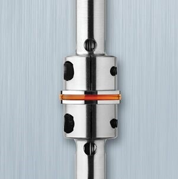
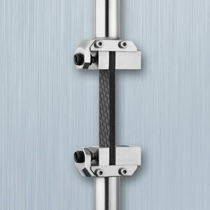
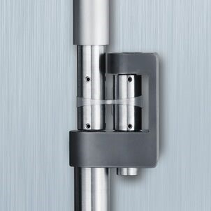
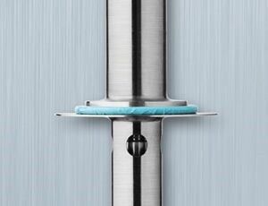
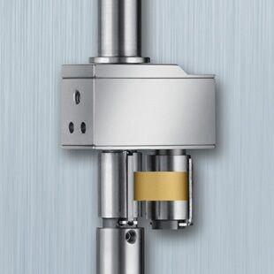
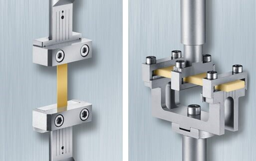

The FCO is a gas convection oven, designed for optimum temperature stability, extremely rapid heating and cooling, and ease-of-use over the temperature range of -150 °C to 600 °C. This powerful heating mechanism can heat at controlled rates up to 60 °C/min. An available liquid nitrogen cooling system is employed to achieve rapid, uniform and efficient cooling to temperatures as low as -150 ˚C. Alternatively, mechanical chiller systems can also be used to cool as low as -100 ˚C without the need for liquid nitrogen. The FCO is used primarily for testing polymer melts, thermosetting materials and solid specimens, and provides exceptional exclusion of oxygen, making it an effective option for high temperature testing of polymers with poor oxidative stability. Superior temperature stability and uniformity is achieved through the use of twin element heaters, which produce counter-rotating airflow in the oven chamber to heat the sample quickly and without thermal gradients.
The FCO can be mounted on either side of the test station and comes standard with a long-life internal LED lamp and window viewing port. An optional camera viewer can be used to record real-time sample images throughout experiments. This visual record is helpful for data validation and sample condition verification. A range of geometries are available for the FCO, including parallel plate, cone and plate, solid torsion, cone and partitioned plate (CPP), extensional viscosity fixture (EVF), the SER3-A Universal Testing Platform and a new range of linear DMA clamps.
Parallel Plates and Cone and Plates:
FCO plate geometries are available in 8, 25, 40 and 50 mm diameters and a range of materials of construction such as stainless steel or titanium. Upper cone geometries are readily available in 0.02, 0.04, and 0.1 radian cone angles. By changing the diameter and cone angle, the measurement range of stress and strain or shear rate can be varied to capture the widest range of test conditions. For curing systems, disposable plates and cones are available in 8, 25, 40, and 50 mm diameters. Low viscosity thermoset resins can be tested with lower disposable cups or plates with drip channels to prevent loss of sample.

Solid Torsion:
Solid or rubbery materials can be characterized using the Rectangular or Cylindrical Torsion geometries. This mode of testing is especially valuable for measuring fully cured thermosets and composites, or measuring the glass transition and secondary transitions of thermoplastic polymers. These stiffer samples are clamped with their long axis coaxial with the rheometer’s rotational axis. Rectangular samples can vary between 0.3 to 6 mm in thickness, up to 12 mm in width, and 40 mm in length. Cylindrical samples with diameters of 1.5, 3, and 4.5 mm can be accommodated with the Cylindrical Torsion geometry.

Extensional Viscosity Fixture (EVF):
The EVF is a patented system used to measure the extensional viscosity of highly viscous materials such as polymer melts, dough, adhesives and more. The fixture comprises of two drums – one that is fixed and stationary, and another that rotates and revolves around the fixed drum – to apply constant rate uniaxial extension on the sample. The extensional stress measured by the fixed drum is unimpeded by gears and bearings, providing the most accurate stress measurement possible without any requirement for a bearing friction calibration. Temperature control up to 350 °C is provided by the Forced Convection Oven (FCO) and Hencky strains up to 4.0 can be applied.

Cone and Partitioned Plate Accessory
The new ARES-G2 Cone and Partitioned Plate Accessory (CPP) expands testing capabilities for highly elastic materials at large deformations in both oscillation and steady shear. The CPP geometry is a conventional cone-plate test configuration in which only the central portion of the plate is coupled to the stress measurement. This creates a “guard ring” of sample around the active measurement area, delaying the effects of edge failure, allowing for higher strains to be measured on elastic materials. This material guard ring also reduces the importance of sample trimming, improving data reproducibility and reducing operator dependence. The geometry consists of a 25 mm annular plate with a hollow shaft which is affixed to the transducer mount. A 10 mm central plate is located within the annulus and is the active measurement surface attached to the torque/normal force transducers. The lower geometry is a 25 mm 0.1 rad cone. The CPP requires minimal alignment and can be easily removed for cleaning. The CPP is unique to the ARES-G2 and further extends its advantages for LAOS testing and polymer rheology.

SER3 Universal Testing Platform
The SER3 Universal Testing Platform is used to perform extensional viscosity measurements and a range of additional material tests. Samples are secured to the surfaces of two windup drums which counter-rotate at equal speeds thanks to a system of intermeshing gears. At a constant drum rotation speed, a constant Hencky strain rate is applied to the sample. The sample stress that resists this deformation is measured by the torque transducer, allowing for the measurement of extensional viscosity. The frame of reference of the SER3 is fixed, making it well-suited to sample imaging and optical analysis during deformation. In addition to extensional viscosity measurements on polymer melts, the SER3 is capable of a range of physical property measurements such as tensile, peel, tear and friction testing on hard and soft solid samples. Extensional viscosity measurements on the ARES-G2 are also possible using the patented Extensional Viscosity Fixture (EVF).

Axial Bending, Tension, and Compression:
With its unique Force Rebalance Transducer (FRT), the ARES-G2 rheometer is the only rotational rheometer capable of performing linear Dynamic Mechanical Analysis (DMA) on solids in bending, tension and compression. Axial sample deformation is applied by driving the high sensitivity FRT in controlled strain sinusoidal oscillation, unlocking all new capabilities for solids testing.

.png)